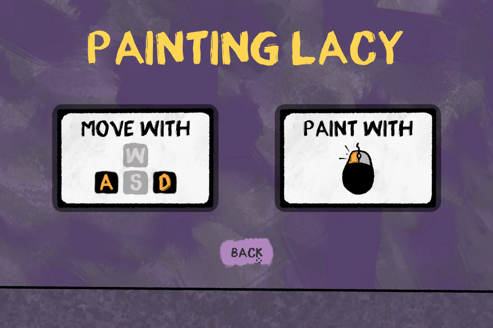
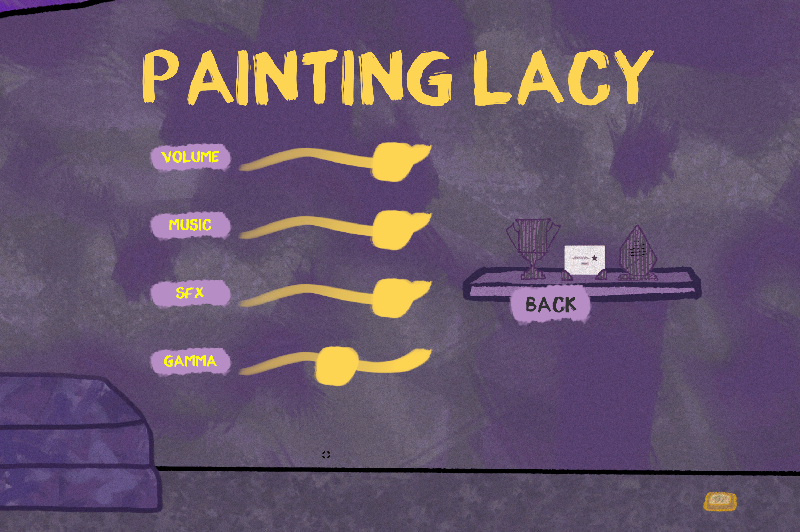
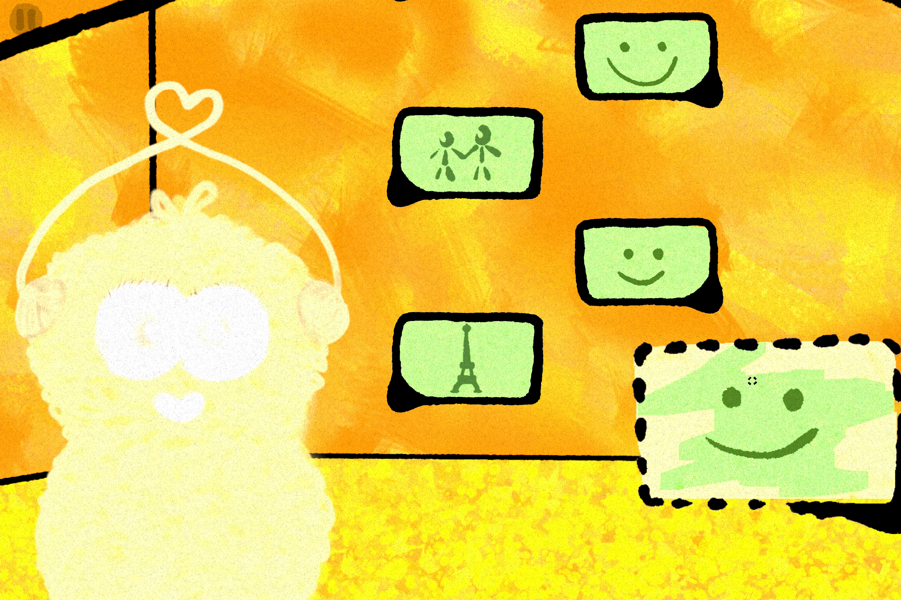
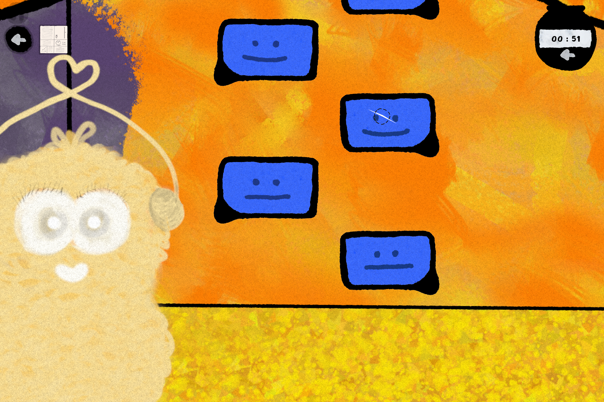
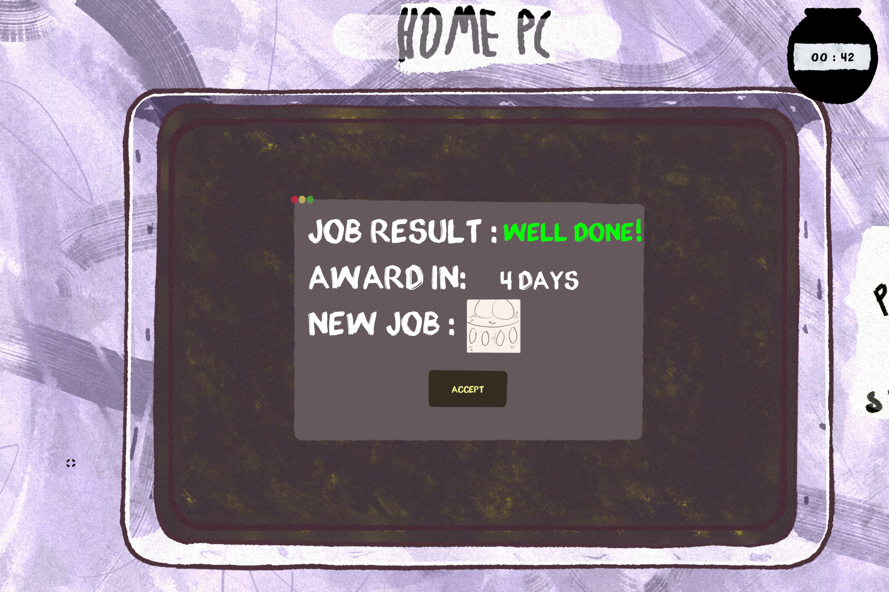
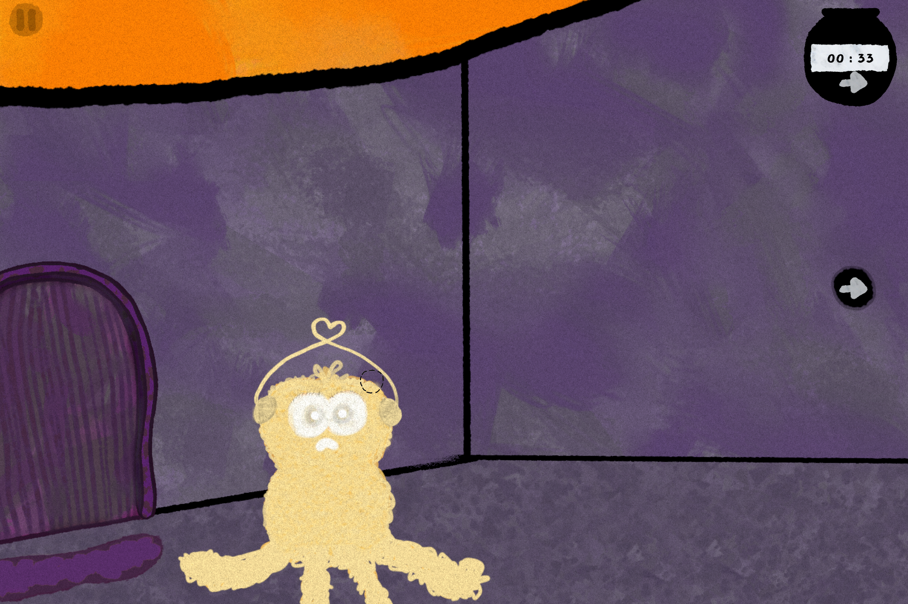
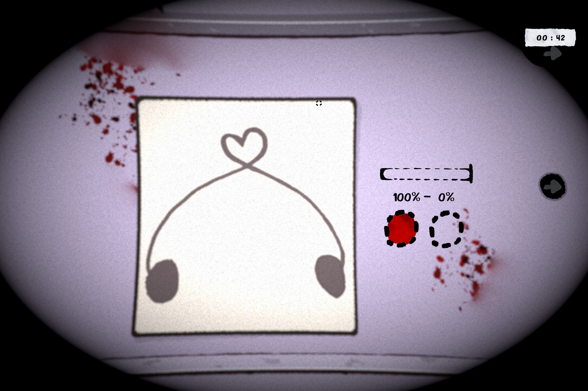
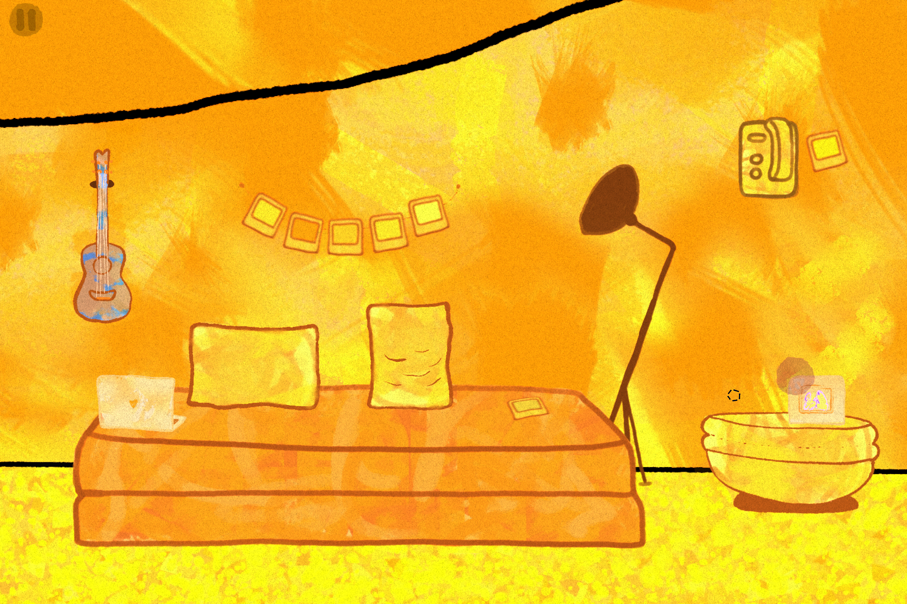
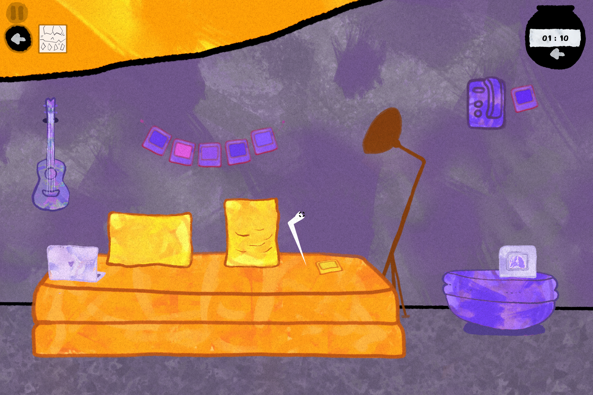
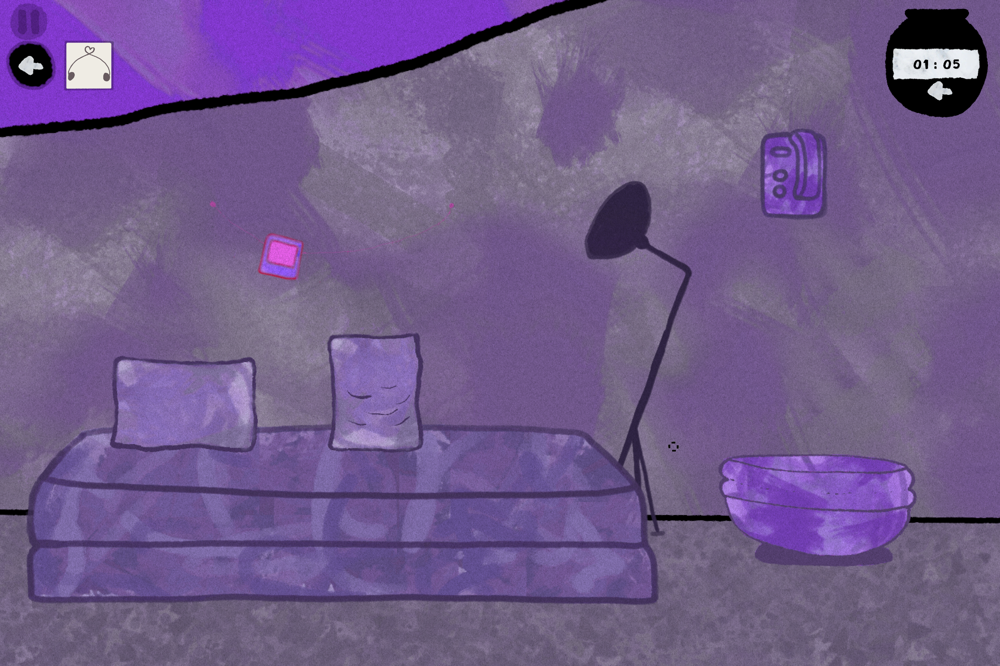

Game Overview
Painting Lacy is an interactive fiction game where players paint their way through excellence at work and home, uncovering a narrative about work-life balance. The game blends elements of puzzle-solving and psychological storytelling.
Authors: Aria Mohebi, PoeTahToe
Genre: Interactive Fiction, Puzzle, Visual Novel
Platforms: Windows, macOS
Gameplay Analysis
Look and Listen
The game has a simple but engaging design that pulls players in. Bright, bold colors represent the messy and unpredictable parts of life and work creating a deeper emotional connection. These colors not only catch the eye but also make the game’s message more meaningful. The music is a thoughtful mix of background sounds and mood-matching tunes, helping players feel the intensity of the moments. Together, the visuals and sounds create an experience that’s both fun and emotionally touching.
Settings
The settings are simple, with basic controls like two keyboard buttons for movement and left-click for painting. Players can adjust volume, music, SFX, and gamma for a tailored experience.


Characters and Interactions
You play as a character without a name, balancing work and home life. The interactions revolve around painting, symbolizing effort and connections. One key interaction involves Lucy who is your wife or partner, where skipping conversations with her results in gameplay consequences.
Example: Skipping chats with Lucy leads to receiving a smaller brush, making tasks slower and harder.
Interactions include:
- Chatting with Lucy as you leave for work.
- Completing timed jobs while maintaining conversations.
- Using a home PC to receive new tasks.


Challenges
The game challenges players to handle tasks and emotions simultaneously. Timed jobs require quick decisions while managing a relationship. Skipping conversations reduces brush sizes, increasing difficulty.


Objects
Players interact with tools like brushes and color palettes to complete tasks. Written messages and environmental clues add depth to the game, pushing the story forward.

Audio
The sound design is crucial for immersion. Soft background music sets a reflective mood, while louder crescendos highlight important narrative moments.
Meta and Cultural Commentary
Meta Commentary
The game sometimes acknowledges its constructed nature through dialogue and breaking the fourth wall, highlighting the unrealistic ideal of perfectly balancing tasks.
Cultural Reflection
The game resonates with modern struggles of work-life balance, exploring themes of burnout and self-reflection. It reflects the challenges of separating personal and professional lives.



Future Development
To enhance the game developers could introduce:
- Additional characters to expand the social dimension of the story.
- Multiple endings based on player choices to increase replayability.
- Deeper puzzles to engage players further.
- Better instructions and larger pause buttons for accessibility.